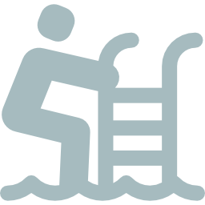

Total Score:
Personal Preparedness
Show Community
Problem
Awareness
0
/
0
Community
Know-
How
0
/
0
Community
Ready
to Act
0
/
0
Community
Personal Impact
Show Community
Individual
0
/
0
Community
Political
0
/
0
Community
Social
0
/
0
Community
Become better prepared for flooding by increasing your impact and preparedness!
Flood Warden Achievement
Beginner
500

Intermediate
5000
Advanced
9000
Try hard to become an Advanced Flood Warden!
Feedback Multiplier
1.5x
2x
3x
Overall view
Show Personal
Help the community become equally prepared for flooding in all the categories.